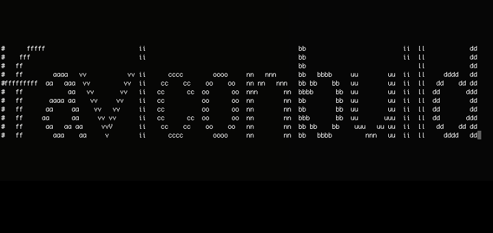

A simple problem; while developing a website you want to add a nice little favorites icon (favicon) for that extra polished look, or perhaps you just want to stop those annoying 404 errors regarding favicon.ico that the browser searches for by default. Shouldn’t be a big deal right?
You look online for a simple build script with minimal dependencies that can run offline and doesn’t rely on any third party services, but you come up empty. This is where I was a few days ago. I decided this was a great time to work on a simple Bash/Batch script to solve a problem while giving an example of how you can write a cross platform utility to help with build automation for a project. For this I created faviconbuild.
Gathering information
The first step was to gather as much information as I could on what favicon variants there are and how to add them to the site. I had already chosen the technology I wanted to use, as I have written many build systems using Bash and/or Batch files depending on the platform of the build machine. It was also a no-brainer for me to use ImageMagick as a cross platform, open source solution for image manipulation via command line.
The astute reader may be aware of a more modern technology that aims to replace the usage of Batch in Windows, the PowerShell, but for this simple application I feel it unwarranted. The old way of doing things does not require the .NET framework and will be supported for years to come.
I started looking for any standards information about favicons, and unsurprisingly, as in many web based technologies, this is sort of a grey area. I would like to spare the reader the details of favicon history, but will include further reading in the External links section below. The main take away is that there are many vendor specific variants and this list can grow at any time. This was the reason I wanted to build something that was simple and easy to extend as new information was discovered.
The Bash Script
There is tremendous power in shell scripts and as a software engineer this is just one of the many features I enjoy so much about development in a Unix environment. Bash is a popular variant of Unix shell that is used by default in Linux and Mac OS X as well as Cygwin for Windows.
Bash Basics
It is very simple to get started with Bash scripting; you only need a text file commonly created with the .sh extension that begins with #!/bin/bash. You can create files any number of ways but a simple way from the terminal is the touch command.
touch faviconbuild.sh
once you have created the file you can even edit it via the terminal using vi, nano, emacs, or any other terminal based text editors. If you are looking for a more UI driven editor I would recommend Sublime. XCode and Eclipse are also popular IDEs depending on the technology of the project, and there are several others out there to explore. The following will load a file named faviconbuild.sh in the current director in vi (if it doesn’t yet exist you will be able to create it later).
vi faviconbuild.sh
Vi is very powerful and full featured so I will not go through much of it now. The basic idea is that you have different modes and by default you are in command mode here you can type short commands to perform various operations. In order to type text you need to be in input mode by pressing i now you can type:
#!/bin/bash
echo Hello World!
Next in order to save you need to be back in command mode by pressing the esc key. A handy shortcut to save is SHIFT+ZZ and the file you opened will be saved (or created if it didn’t yet exist) and you will be back at the terminal.
In order to execute such a file you will also need to change the permissions to allow execution. In Unix this is commonly done with the chmod command.
Ex:
chmod +x faviconbuild.sh
OR
chmod 755 faviconbuild.sh
You can now execute the script by file name in the terminal. If you are running a script called faviconbuild.sh from the same directory you are at in the terminal:
./faviconbuild.sh
If you were following along you would receive the following output:
Hello World!
Some other common commands for navigating within a terminal are cd to change directory, pwd to print the working directory (aka where you are at in the file system), and ls to list the contents of folders. In Bash you can hit Tab twice to see a list of all commands available, or look online for the most commonly used. Typing man followed by the command will bring up the man page (short for manual page) for that command, this is a helpful way to see usage information.
Here is some common syntax in a Bash script:
#comment's start with a #
# variable assignment
Variable=Some
# use the variable with $
echo $Variable
# or optionally use ${}
# which becomes mandatory if you try to append without spaces
echo ${Variable}thing
# Conditional branching
if [ "$(uname)" == "Darwin" ]; then
# do mac stuff
elif [ "$(expr substr $(uname -s) 1 5)" == "Linux" ]; then
# do linux stuff
fi
# functions
sayhello()
{
echo Hello!
}
# calling them
sayhello
faviconbuild Initialization in Bash
If you look at the source for faviconbuild.sh (version 1.0.0) you will notice it is broken into sections. The top of the file handles initialization tasks.
The first part of initialization in the script is to handle path resolution. This is not mandatory in a Bash script by any means, but I wanted a way to build relative paths from the directory in which faviconbuild.sh was ran, regardless of where it was executed from as well as taking symlinks into account. I ended up using the solution found on this Stack Overflow question.
The next part of initialization has to do with setting default variables used in the script, many of which are overriden later via arguments to the script itself.
The final part of initialization uses some platform sniffing logic to set a relative path to a default directory for the platform specific ImageMagick executable.
faviconbuild Functions in Bash
There are five functions in faviconbuild.sh (version 1.0.0).
usage() simply echos the version and copyright information as well as help command syntax. It is invoked by the command parsing logic.
convertImage() takes four parameters: the source file, width and optionally height and background color. This is the main function for calling ImageMagick’s convert. It is a simple start but I could see the internals of this method changing over time if there are more requirements.
createIcon() takes a variable number of parameters to specify the widths (and implied height as it currently assumes square images) of the images to use as the source for the icon file. I again created this method in v1 of faviconbuild to fill the immediate need at the time and can envision it becoming much more flexible.
Finally createLink and createMeta are utility methods for creating the html markup required and optionally create the required image using convertImage().
faviconbuild Command Parsing in Bash
It is a common convention for Unix terminal applications to allow parameters and often provide both a meaningfully named option switch as well as a shorthand version. I wanted to keep with this convention as I find it very useful.
Example (Note: these both do the same thing):
./faviconbuild.sh -h
./faviconbuild.sh --help
In the command line parsing section of faviconbuild.sh (version 1.0.0) you will notice a while loop that switches on the input parameters to the application while considering both the shorthand and longer form. It then uses shift to consume the parameter and move to the next. Many of the parameters also use shift to consume parameters they expect, except for the help and wild-card catchall which invokes the usage() function and exits the program.
The code looks as follows:
1 | # command line parsing |
The last part of this section does some minor directory sanitation.
faviconbuild Main loop in Bash
The last section of the file handles the main logic flow. First the output directory is created using mkdir -p the -p switch is to ensure it will create intermediate directories as well. Then it removes the output markup file with rm -f.
The interesting logic here is within the main loop which consists of a while loop that reads each line of an input file. We will visit this more in the section The Parse File below, but the general idea is to replace specific tokens to generate a Bash formatted string and pass that to the eval command to execute it.
For the sake of simplicity I chose tokens that wouldn’t clash with either script environment, and also made the parse file biased toward Batch as Bash is much more flexible and easier to manipulate the input.
The string manipulation format for the Bash file is result_string="${input_string//token_to_replace/token_to_replace_with}" to replace all instances of the token. You can find more information on string manipulation here.
The Batch Script
I once was a major advocate of Windows, coming from a background in C/C++/C# and assembly in real time simulation and gaming. I have since joined the Unix side and prefer to work in those environments now instead. This in general is a topic for another post, but I figured I would mention this as I refer to supporting the odd ball OS. I say odd ball here because Windows is a proprietary creature of its own. I used to be of the mindset that Mac and Linux environments where the weird ones, but since the release of OSX it seems like just about every platform is now Unix based with the obvious exception of Windows (there are several others out there as well, but for the market of personal computing I will call them the minority).
I normally develop Windows application today from a VM such as VirtualBox although I have also used bootcamp to install Windows natively on my MacBook Pro and even, on occasion, install it on some of my spare hardware. The VM approach actually made it very easy to develop and test the Batch file while I was also developing the Bash script all from the comfort of my laptop.
I could have forgone the creation of a Batch file and simply required the Windows user to install a Unix like environment such as Cygwin, but that just didn’t seem right. I figured it would be a nice exercise to show how one could take a more direct cross platform approach to terminal/command line scripting. I also simply like to keep an open mind about the platforms on which I develop; I do still use the OS on occasion although it is primarily for helping family backup and restore their computers, or for a client that needs to support it.
So without further ado… Lets get to the Batch File!
Batch Basics
Batch files require even less work then Bash, you simply create a normal text file and change the extension to .bat. The OS will now associate the file as a Batch file. There is no step to change the permissions of the file.
You will also notice I didn’t mention any special command line based text editors as Windows doesn’t really have a reliable set of utilities such as this across all versions. You will not find a decent text editor for development on Windows at all by default, I would recommend something like NotePad++ for the basics and if you start developing more frequently Visual Studio is an excellent IDE. Unlike many other IDEs the full version is not free but the free express editions are still very useful.
You can navigate folders in Batch similar to how we did previously with cd changing directory and dir showing the contents. You can obviously find more information online such as this wikipedia entry.
There is no standard header information for a Batch file and you can begin writing commands on the first line. It is pretty common practice, however, to start with the command @echo off to disable the verbose echoing of all commands. It can, however, come in handy to comment out this line while debugging.
Here is some common syntax in a Batch script:
REM comment's start with REM
REM variable assignment requires set
set Variable=Some
REM use the variable enclosed in %
echo %Variable%
REM unless it is an argument which are numbered and require only one %
echo %1
REM Conditional branching
REM Note: This is very very touchy. There really isn't much of a generic
REM if else if construct in Batch land.
if exist filename.txt (
echo File is here
) else (
echo File not found
)
REM There also isn't really a concept of functions
REM but you can get equivalent functionality like this
:sayhello
setlocal
echo Hello!
endlocal
goto :eof
# calling them
call :sayhello
faviconbuild Initialization in Batch
The initialization in Batch is a bit more simplistic then what we reviewed previously, mainly because I didn’t bother resolving symlinks for faviconbuild.bat (version 1.0.0) as they are far less common on Windows. They are, however, possible with the mklink command so I will probably add this later.
This line set batdir=%~dp0 uses the %0 parameter of the Batch file which is the current executing script. The ~dp portion of the variable are modifiers which in this case specifies drive letter and path. You can use for /? to show more information related to these modifiers or go here for more info.
The rest of initialization is similar to the Bash case with the exception of the call to goto :commandlineparsestart. This is required as you need to explicitly direct program flow in a Batch file.
faviconbuild Functions in Batch
The Batch file consists of the same functions as before only with a different syntax. Take a look at faviconbuild.bat for the specifics.
faviconbuild Command Parsing in Batch
You can see in the snippet below, command line parsing in Batch is a bit more cumbersome then the previous script. I decided to support the same options as the Bash script here, but you may notice that it is missing the failure case to exit on bad parameters. I will likely reorganize this in later versions to handle that case, but this is primarily due to the lack of “else if” support.
1 | REM command line parsing |
faviconbuild Main loop in Batch
The main loop here is a bit more convoluted then before, although it accomplishes slightly less. I decided to break the loop logic out into a subroutine to keep it a bit cleaner.
The for /f command is used to loop through items in a text file and can take several options. usebackq is used to indicate an alternate quoting style and in this case is used to more easily handle file names with spaces. We specify a wild-card with the ‘tokens’ option tokens=* to specify that we want all of the tokens read (you can optionally put any number here to only read n number of tokens). The ‘delims’ option allows you to specify the delimiter for parsing (I could probably leave this out to keep the default of using a space).
Inside the for loop we simply pass the line contents to the loop subroutine. This uses enabledelayedexpansion to allow for variables to be expanded at execution time rather then parse time. This is used with the ! syntax to avoid parsing the % symbol as we need to replace , with % to set our variables in the parsed output.
The first line after the setlocal call uses a wild-card to consume all input to the subroutine. The following line stores a % sign for token replacement (note it must be doubled up %% to avoid it being consumed by the parse). The next two lines utilize string replacement with the set output=%input:token_to_replace:token_to_replace_with syntax with the second line utilizing delayed expansion to replace !percent!.
Finally the parsed line is invoked with call.
The Parse File
I decided to keep the details of favicon creation abstracted into a shared file to make it a little easier to maintain consistency among the two platform specific scripts. There is a decent amount that can be done to update the output by simply adding new commands to the parse file.
The format is currently self documented in the loops of both scripts, with a bias toward the Batch script as mentioned previously. I decided to keep it simple in the first iteration with the following conventions:
- ‘function’ calls begin with a colon
:to more easily support batch call syntax. - variables are wrapped with
,#and#,to allow identification of start and end tokens while not clashing with either script. delis used to delete a file.
That is pretty much it, everything else is what you would expect if writing the commands normally in the native script.
Conclusion
A simple problem of image manipulation to generate favicons, while also generating the relevant markup to display them, proves itself a worth while exercise in build automation.
I hope you found this brief tour of a cross platform build utility interesting, and agree that there is still a great deal of power in writing Bash or Batch scripts to supplement existing systems or aid in their creation.
External links
faviconbuild
nice command line reference
ImageMagick
favicons on WikiPedia
Bash string manipulation
PowerShell